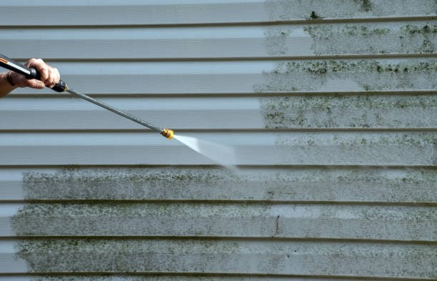

L/S ALGESERVICE UDFØRER FLISERENS OG ALGEBEHANDLING - EFFEKTIVT & MILJØGODKENDT
FLISERENS OG ALGEBEHANDLING
udfører professionel fliserens til private og erhvervskunder, hvor vi har kvalitet i højsædet. Vi benytter professionelle maskiner, som er skånsom over for fliserne under rensningen, på den måde undgår vi at beskadigelse af fliserne. Vi tilbyder imprægnering efter vi har renset fliserne. Imprægneringen er med til at forlænge levetiden på fliserne og gør at alger og mos har svært ved at trænge ned i fliserne. Med denne behandling giver vi altid 10 års garanti. Læs mere om fliserens her

FACADERENS OG ALGEBEHANDLING
Jysk Algeservice udfører professionel facaderens til private og erhvervskunder, hvor vi har kvalitet højsædet. Vi benytter miljøgodkendte produkter, som fjerner alger, mos, svamp og andet skidt som vokser på murværket Ved efterbehandling med imprægnering tilbyder vi 10 års garanti på udført arbejde. Læs mere om facaderens her
